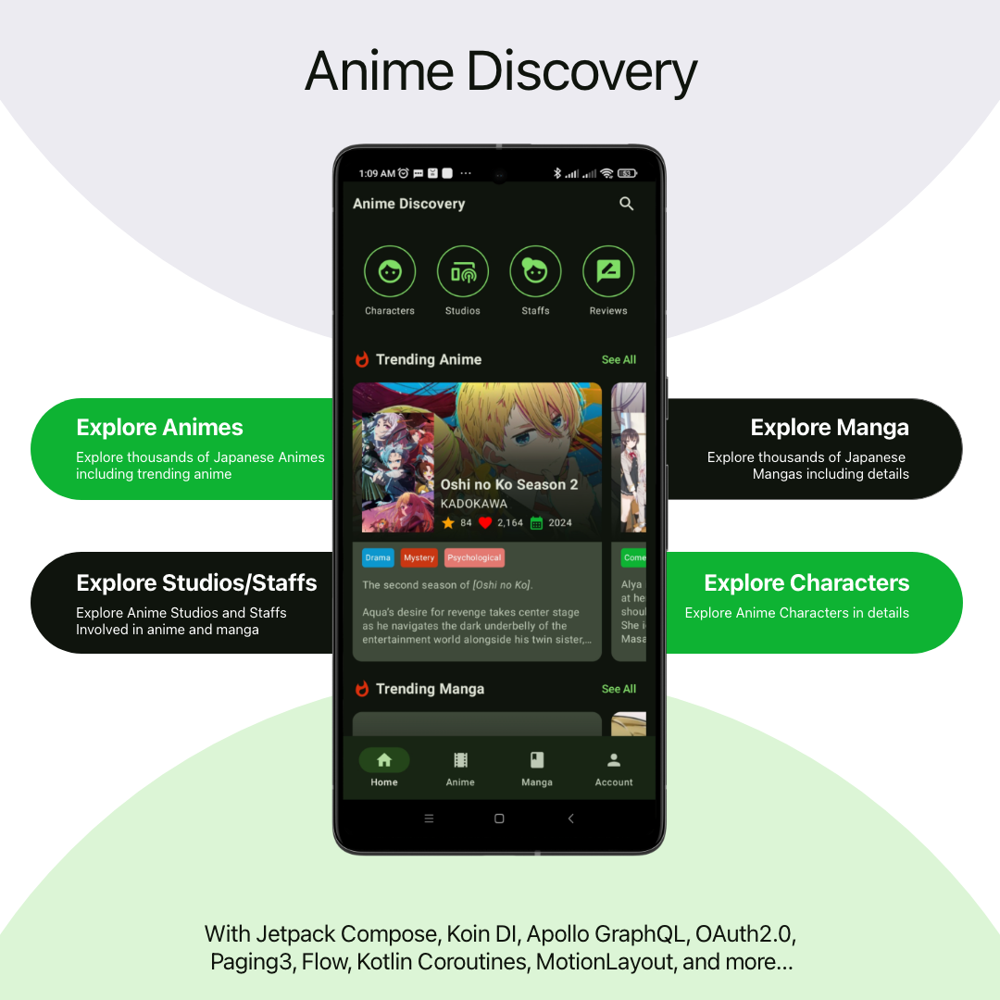

Anime Discovery
Anime Discovery is a mobile application that leverages the Jetpack Compose and Kotlin, and it can be utilized to explore a wide variety of anime, manga, reviews characters, studios and staffs affiliated with anime or manga. Overall, this app is based on the AniList GraphQL API. I built this app as a mean of Jetpack Compose portfolio that exhibits the competency to deal with GraphQL APIs, OAuth 2.0 and various technological aspects which is presented below.

Core Features
- Explore thousands of Japanese Animes including trending anime
- Explore Manga
- Explore Studios, Staffs and Anime Characters
Tech Stack
- Jetpack Compose and Kotlin
- Koin for Dependency Injection
- AniList GraphQL API, Apollo Client, Apollo Http Cache
- Retrofit & okHttp : To implement OAuth 2.0 authentication flow in a manual way and to intercept access token with the intention of making authenticated requests.
- Motion Layout and Constraint Layout: Used to animate the motion of anime/manga detail pages, characters/staff detail pages and review detail pages.
- Nested Navigation using Compose Navigation: component that allows easier implementation of navigation from composables.
- Static Shortcut and Pinned Shortcut : To show shortcuts menus to navigate characters, studios, staffs and reviews pages when users long click on the app icon or click on the home screen shortcuts.
- Paging 3: to paginate GraphQL responses.
- MPAndroidChart: is used to visualize media’s score distribution and status distributions and Bar Charts and Pie Charts.
- Material 3 Design: Material 3 is the latest Google’s open-source design system. Design and build beautiful, usable products with Material 3.
- App Theming : The app also includes theme settings: Follow System, Light Mode and Dark Mode.
- Horizontal Pager : is used to make onboarding screen to shows users at once.
- Preferences Data Store : to save theme settings, onboarding status and access token.
- Pull To Refresh Material 3
- Lottie Composition : to visualize Lottie Animations.
- Android’s Download Manager : to download cover photo and banner images of a character, staff, anime or manga.
- Coil : to load network images.
- Coroutines : Kotlin coroutines
- Flow : Flows are built on top of coroutines and can provide multiple values. A flow is conceptually a stream of data that can be computed asynchronously.
- Splash Screen API : to show a splash screen while the app's process isn't running.
- ViewModel : Designed to store and manage UI-related data in a lifecycle conscious way. The ViewModel class allows data to survive configuration changes such as screen rotations.
- Clean Architecture: Clean architecture is based on the principle that software systems should be designed with a clear separation of concerns, where each component of the system is responsible for a specific task or functionality.

App Screenshots